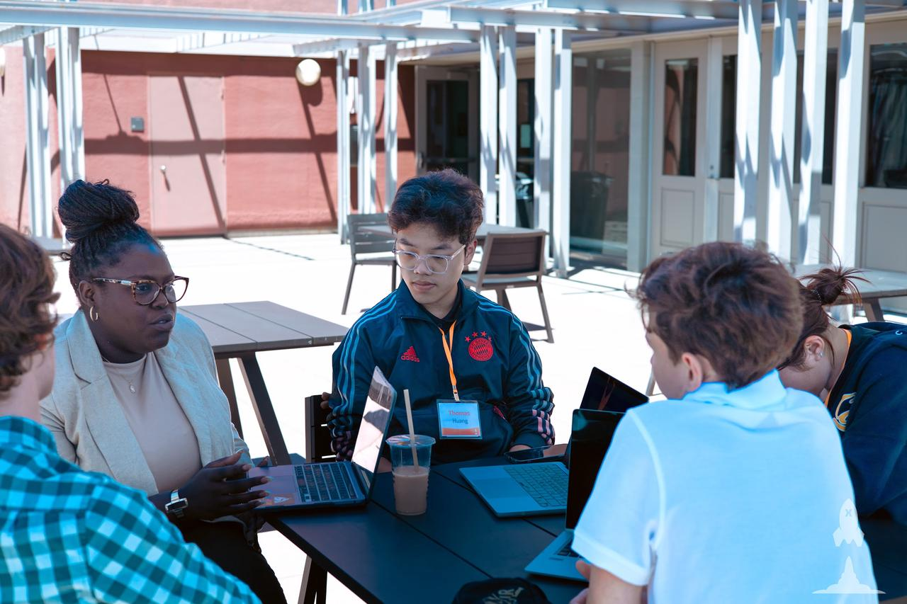
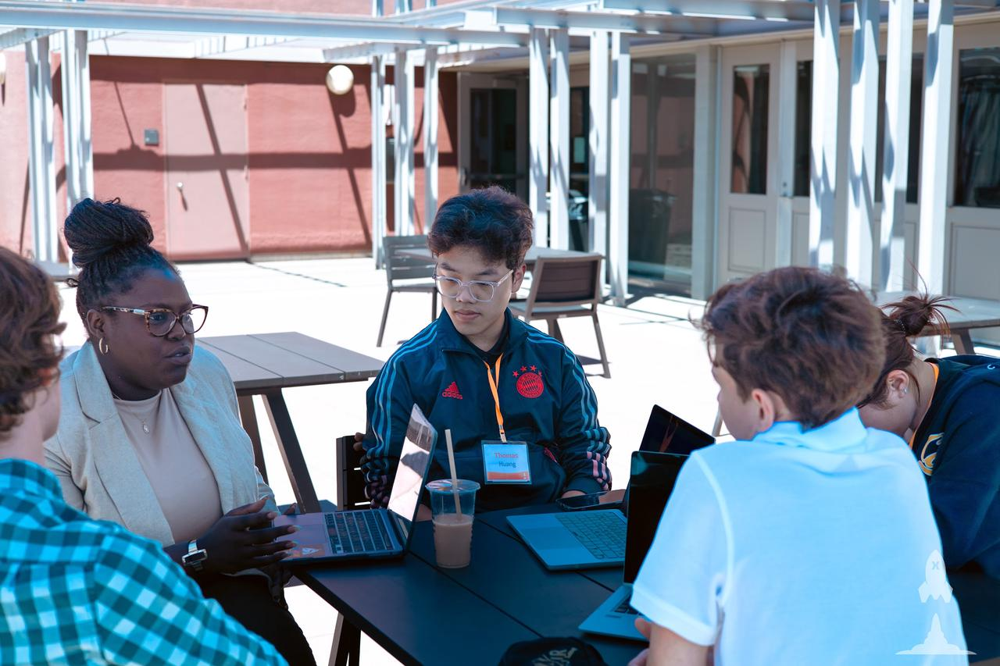

Beyond youth soccer development, my interests branched into the humanities and venture-building. Here are a few projects that show the other sides of me.
Sociology Day
From club roundtables and surveys, I turned questions on gender, AI, and mobility into hands-on activities. On Sociology Day, those ideas became interactive booths and pop-up forums that drew 500+ students into real conversation.


LaunchX 2024 Bay Area
I co-founded Ad-Mentor, an AI assistant for micro-businesses to produce ready-to-post social media ads.
 

GCGS Entrepreneurship Club
I founded the GCGS Entrepreneurship Club in 2022. We built products, hosted product-launching event, and ran school scavenger hunts & bazaars.


Wharton Sports Business Academy
In the summer after Grade 11, I participated in Wharton's Sports Business Academy summer program and led our team's research on the National Lacrosse League.